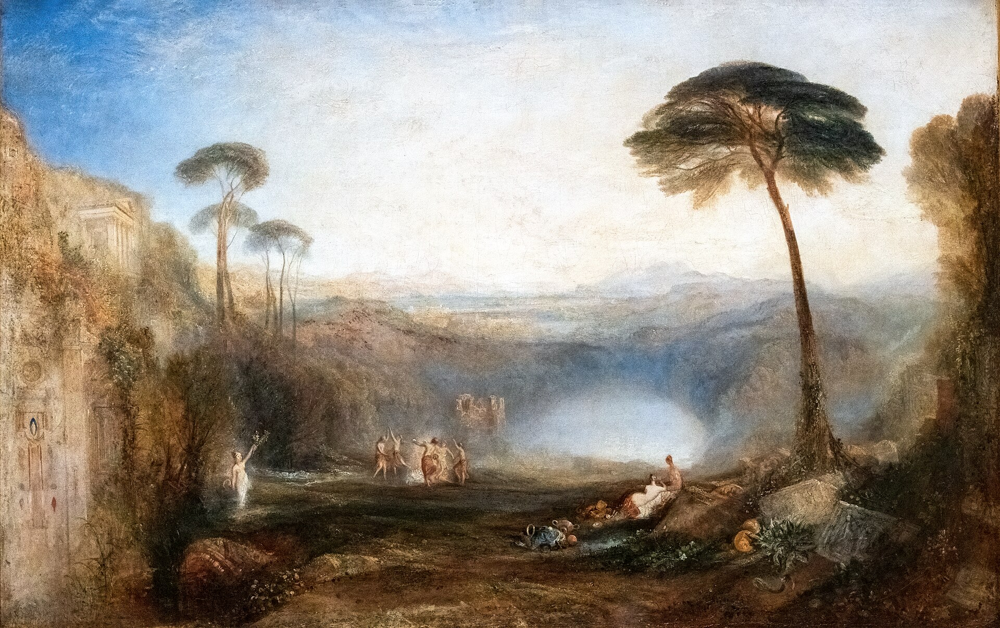

Энеида · песнь 6 из 12
Сошествие в подземный мир

Кратко
Эней приходит к пещере со ста устами, где обитает Кумская Сивилла, — но прежде похорон нужно предать земле трубача Мизена, разбившегося о скалы в состязании с тритоном, и найти золотую ветвь, пропуск для живого в мир мёртвых (сорвать её может лишь тот, кого зовёт судьба; на месте сорванной тут же вырастает другая). Миновав Харона, требующего платы, и усыпив медовой лепёшкой трёхглавого Цербера, Эней видит души младенцев, безвинно осуждённых и самоубийц от несчастной любви — в их числе молчаливую тень Дидоны, которая отворачивается и уходит, не сказав ни слова. Среди воинов — обезображенный Деифоб, рассказывающий, как Елена сама выдала его данайцам в последнюю ночь Трои. Сивилла описывает Тартар, куда живым хода нет: там судья Радаманф карает титанов, Иксиона, Сизифа и Тития. В Элизии, среди поэтов, жрецов и героев, Эней наконец встречает отца: Анхис, испивший забвения из Леты, объясняет учение об очищении и переселении душ и в грандиозном видении показывает сыну ещё не рождённые души будущих римлян — Сильвия, Ромула, Нуму, Брута, вплоть до самого Августа, которого сравнивает с Геркулесом и Вакхом, — и завершает рассказ скорбной элегией юному Марцеллу, племяннику Августа, умершему совсем молодым. Из подземного мира Эней и Сивилла выходят через ворота из слоновой кости — врата лживых снов, а не через роговые врата истины, — и это единственная деталь, которую Вергилий никак не поясняет.
Главные моменты
- Похороны Мизена и золотая ветвь — входной билет в мир мёртвых нужно заслужить дважды.
- Харон и медовая лепёшка для Цербера — подземный мир у Вергилия почти бюрократичен.
- Встреча с тенью Дидоны: она молчит и уходит — вина без прощения.
- Деифоб рассказывает, как Елена сама предала его данайцам в ту последнюю ночь.
- Парад ещё не рождённых душ Рима — история будущего, рассказанная как пророчество.
- Плач по юному Марцеллу и загадочный выход через ворота лживых снов — самые обсуждаемые строки поэмы.
Значение
Идейный центр поэмы: личное горе Энея становится частью державной судьбы Рима, а сама череда смертей и пророчеств задаёт вопрос, на который поэма так и не даёт прямого ответа.